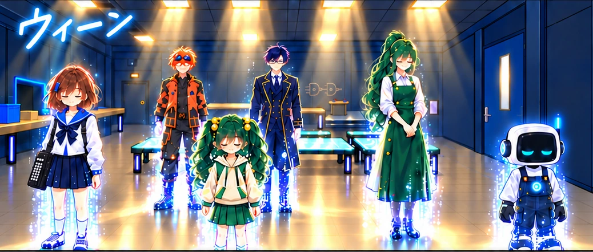

作品紹介
文化祭「星結祭」の二日目。生徒会室でハルがパソコンの電源を入れると、PCの中で働く装置たちも動き出します。生徒会長のユイと映像を作るハルたちを追いながら、コンピュータの中で情報がどう処理されるかを描きます。
原作・監修 呉桂一
制作記録・プロンプトを見る
文化祭「星結祭」の二日目。生徒会室でハルがパソコンの電源を入れると、PCの中で働く装置たちも動き出します。生徒会長のユイと映像を作るハルたちを追いながら、コンピュータの中で情報がどう処理されるかを描きます。
原作・監修 呉桂一
制作記録・プロンプトを見る